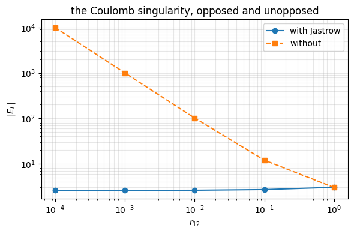
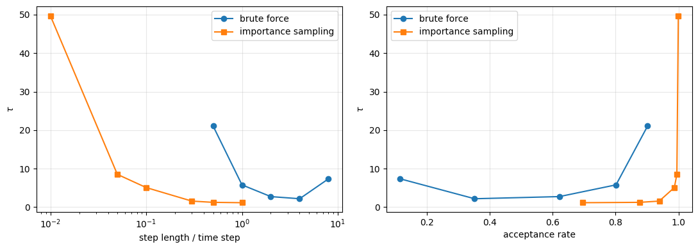
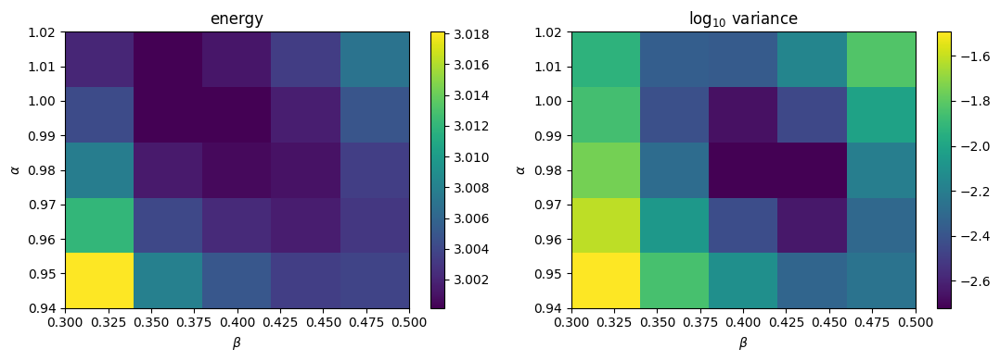

14. Variational Monte Carlo#
Executable companion to chapter 13.
Chapter 12 assembled the tools and ended with a first variational Monte Carlo run. This is the method proper: the variational principle, the trial wave function and why it has the form it does, the local energy, the sampler, and finally importance sampling with the quantum force.
The system is the two-electron quantum dot of chapter 11, which is small enough to differentiate by hand, has the analytic answer \(E = 3\) at \(\hbar\omega = 1\), and has already been solved by Hartree-Fock, MP2 and CCSD — so the Monte Carlo result can be put on the same scale.
import sys
sys.path.insert(0, "../BookManybody/BookMaterial/Programs")
import math
import numpy as np
import matplotlib.pyplot as plt
import vmc
14.1. 1. The trial function#
Two variational parameters: \(\alpha\) scales the orbital, \(\beta\) sets the range of the correlation factor. The numerator of the Jastrow exponent is not a parameter — it is fixed at 1 by the cusp condition.
Both the local energy and the quantum force are differentiated by hand. An error in the first gives a wrong energy; an error in the second is silent. So both get checked against finite differences before anything is run.
rng = np.random.default_rng(1)
worst_energy = worst_force = 0.0
for omega in (0.5, 1.0, 2.0):
for _ in range(15):
r = rng.normal(0.0, 1.0, (2, 2))
for alpha, beta in ((0.98, 0.40), (0.80, 0.20), (1.10, 0.60)):
worst_energy = max(worst_energy,
abs(vmc.local_energy(r, alpha, beta, omega)
- vmc.local_energy_fd(r, alpha, beta, omega)))
worst_force = max(worst_force, float(np.abs(
vmc.quantum_force(r, alpha, beta, omega)
- vmc.quantum_force_fd(r, alpha, beta, omega)).max()))
print(f"local energy : largest discrepancy {worst_energy:.1e}")
print(f"quantum force: largest discrepancy {worst_force:.1e}")
print("(both at the level of the finite-difference truncation error)")
local energy : largest discrepancy 5.1e-05
quantum force: largest discrepancy 2.7e-10
(both at the level of the finite-difference truncation error)
14.2. 2. The cusp condition at work#
As the electrons approach, \(1/r_{12}\) diverges. The Jastrow factor makes the kinetic term produce a compensating divergence, and the local energy stays finite. That cancellation is the cusp condition.
separations = np.array([1.0, 0.1, 0.01, 0.001, 0.0001])
with_jastrow, without = [], []
for r12 in separations:
r = np.array([[r12/2, 0.0], [-r12/2, 0.0]])
with_jastrow.append(vmc.local_energy(r, 1.0, 0.4))
without.append(2.0 + 1.0/r12)
print(f"{'r_12':>9s} {'E_L with Jastrow':>18s} {'E_L without':>14s}")
for r12, a, b in zip(separations, with_jastrow, without):
print(f"{r12:9.4f} {a:18.6f} {b:14.2f}")
plt.figure(figsize=(6, 4))
plt.loglog(separations, np.abs(with_jastrow), "o-", label="with Jastrow")
plt.loglog(separations, without, "s--", label="without")
plt.xlabel("$r_{12}$"); plt.ylabel("$|E_L|$")
plt.legend(); plt.grid(alpha=0.3, which="both")
plt.title("the Coulomb singularity, opposed and unopposed")
plt.tight_layout(); plt.show()
r_12 E_L with Jastrow E_L without
1.0000 3.031237 3.00
0.1000 2.703286 12.00
0.0100 2.611464 102.00
0.0010 2.601159 1002.00
0.0001 2.600116 10002.00

14.3. 3. Brute-force Metropolis#
Uniform proposals, one particle at a time, accepted with \(\min(1, |\Psi_T(y)|^2/|\Psi_T(x)|^2)\).
Two details are easy to get wrong: move one particle at a time (moving all of them lowers the acceptance rate for the same step), and count rejected moves — the old configuration is measured again. Dropping them biases the average.
steps = (0.5, 1.0, 2.0, 4.0, 8.0)
brute = {}
print(f"{'step':>6s} {'acceptance':>11s} {'energy':>13s} {'error':>10s} "
f"{'variance':>10s} {'tau':>7s}")
for step in steps:
r = vmc.vmc_brute_force(0.98, 0.40, n_cycles=20000, step=step,
rng=np.random.default_rng(2024))
brute[step] = r
print(f"{step:6.1f} {r['acceptance']:10.1%} {r['energy']:13.6f} "
f"{r['error']:10.6f} {r['variance']:10.5f} {r['tau']:7.2f}")
step acceptance energy error variance tau
0.5 90.2% 2.999367 0.001400 0.00186 21.06
1.0 80.2% 2.999729 0.000756 0.00197 5.79
2.0 62.2% 3.000874 0.000503 0.00185 2.74
4.0 35.2% 2.999744 0.000456 0.00190 2.18
8.0 11.6% 3.000497 0.000811 0.00179 7.35
14.4. 4. Importance sampling#
The uniform proposal is wasteful: it offers moves in every direction equally, including into regions where \(|\Psi_T|^2\) is negligible. Requiring the Fokker-Planck equation to have \(|\Psi_T|^2\) as its stationary solution forces the drift to be the quantum force
and the Langevin equation integrated by Euler gives the proposal
That proposal is asymmetric, so Metropolis is replaced by Metropolis-Hastings with the Green’s function ratio.
time_steps = (0.01, 0.05, 0.1, 0.3, 0.5, 1.0)
importance = {}
print(f"{'dt':>7s} {'acceptance':>11s} {'energy':>13s} {'error':>10s} "
f"{'variance':>10s} {'tau':>7s}")
for dt in time_steps:
r = vmc.vmc_importance(0.98, 0.40, n_cycles=20000, time_step=dt,
rng=np.random.default_rng(2024))
importance[dt] = r
print(f"{dt:7.3f} {r['acceptance']:10.1%} {r['energy']:13.6f} "
f"{r['error']:10.6f} {r['variance']:10.5f} {r['tau']:7.2f}")
dt acceptance energy error variance tau
0.010 100.0% 3.002679 0.002268 0.00207 49.72
0.050 99.5% 3.002015 0.000914 0.00196 8.52
0.100 98.7% 3.001107 0.000721 0.00204 5.09
0.300 93.9% 3.000415 0.000393 0.00197 1.57
0.500 87.7% 3.000438 0.000348 0.00195 1.24
1.000 69.6% 3.001128 0.000323 0.00181 1.15
fig, axes = plt.subplots(1, 2, figsize=(11, 4))
axes[0].semilogx(steps, [brute[s]["tau"] for s in steps], "o-",
label="brute force")
axes[0].semilogx(time_steps, [importance[d]["tau"] for d in time_steps], "s-",
label="importance sampling")
axes[0].set_xlabel("step length / time step"); axes[0].set_ylabel(r"$\tau$")
axes[0].legend(); axes[0].grid(alpha=0.3)
axes[1].plot([brute[s]["acceptance"] for s in steps],
[brute[s]["tau"] for s in steps], "o-", label="brute force")
axes[1].plot([importance[d]["acceptance"] for d in time_steps],
[importance[d]["tau"] for d in time_steps], "s-",
label="importance sampling")
axes[1].set_xlabel("acceptance rate"); axes[1].set_ylabel(r"$\tau$")
axes[1].legend(); axes[1].grid(alpha=0.3)
plt.tight_layout(); plt.show()

Notice that the two curves do not share an optimal acceptance rate. Brute force does best near 35%, importance sampling near 70–90%, because the drift makes a large proposed move likely to be accepted. The rule of thumb “aim for 50%” belongs to symmetric proposals only.
14.5. 5. What importance sampling actually buys#
b = vmc.vmc_brute_force(0.98, 0.40, n_cycles=40000, step=4.0,
rng=np.random.default_rng(7))
i = vmc.vmc_importance(0.98, 0.40, n_cycles=40000, time_step=0.5,
rng=np.random.default_rng(7))
print(f"{'sampler':>22s} {'acceptance':>11s} {'energy':>13s} {'error':>10s} "
f"{'tau':>7s} {'n_eff':>8s}")
for label, r in (("brute force", b), ("importance sampling", i)):
print(f"{label:>22s} {r['acceptance']:10.1%} {r['energy']:13.6f} "
f"{r['error']:10.6f} {r['tau']:7.2f} "
f"{len(r['samples'])/r['tau']:8.0f}")
ratio = b["error"]/i["error"]
print(f"\nerror ratio {ratio:.2f}, a factor {ratio**2:.1f} in computer time")
print("A real but unspectacular gain — for a system this small with a very")
print("good trial function, brute force is already close to optimal. The")
print("advantage grows with particle number, and becomes essential in DMC.")
sampler acceptance energy error tau n_eff
brute force 35.2% 3.000889 0.000322 2.28 17531
importance sampling 87.5% 3.000406 0.000245 1.23 32521
error ratio 1.31, a factor 1.7 in computer time
A real but unspectacular gain — for a system this small with a very
good trial function, brute force is already close to optimal. The
advantage grows with particle number, and becomes essential in DMC.
14.6. 6. A wrong quantum force is not a wrong answer#
This is worth knowing, because it is a trap. Detailed balance holds for any drift, provided the same expression is used to propose the move and to evaluate the Green’s function. A wrong quantum force therefore leaves the energy correct and damages only the efficiency — so it will not show up in your answer, only in your error bar.
print(f"{'quantum force':>22s} {'acceptance':>11s} {'energy':>13s} "
f"{'error':>10s} {'tau':>7s}")
for label, f in (("correct", vmc.quantum_force),
("terms multiplied", vmc.wrong_quantum_force)):
r = vmc.vmc_importance(0.98, 0.40, n_cycles=20000, time_step=0.5,
rng=np.random.default_rng(11), force=f)
print(f"{label:>22s} {r['acceptance']:10.1%} {r['energy']:13.6f} "
f"{r['error']:10.6f} {r['tau']:7.2f}")
print("\nBoth energies are right. A wrong *local energy*, by contrast,")
print("would give a wrong number — which is why both are checked against")
print("finite differences in section 1.")
quantum force acceptance energy error tau
correct 87.5% 3.000019 0.000343 1.20
terms multiplied 57.4% 3.000165 0.000476 2.43
Both energies are right. A wrong *local energy*, by contrast,
would give a wrong number — which is why both are checked against
finite differences in section 1.
14.7. 7. The variational surface#
The energy is flat near its minimum; the variance is not. Since we know the variance should be zero for an exact wave function, it has both a sharper minimum and a known target — which is the practical argument for variance minimisation.
alphas = np.array([0.94, 0.96, 0.98, 1.00, 1.02])
betas = np.array([0.30, 0.36, 0.40, 0.44, 0.50])
energies, variances, errors = vmc.scan(alphas, betas, n_cycles=8000,
time_step=0.5)
print("energy")
print(" " + "".join(f"{b:>10.2f}" for b in betas) + " <- beta")
for i_, a in enumerate(alphas):
print(f"{a:5.2f}" + "".join(f"{energies[i_, j]:10.5f}"
for j in range(len(betas))))
print("\nvariance")
print(" " + "".join(f"{b:>10.2f}" for b in betas) + " <- beta")
for i_, a in enumerate(alphas):
print(f"{a:5.2f}" + "".join(f"{variances[i_, j]:10.5f}"
for j in range(len(betas))))
fig, axes = plt.subplots(1, 2, figsize=(11, 4))
for ax, data, name in ((axes[0], energies, "energy"),
(axes[1], np.log10(variances), "log$_{10}$ variance")):
im = ax.imshow(data, origin="lower", aspect="auto", cmap="viridis",
extent=[betas[0], betas[-1], alphas[0], alphas[-1]])
ax.set_xlabel(r"$\beta$"); ax.set_ylabel(r"$\alpha$"); ax.set_title(name)
fig.colorbar(im, ax=ax)
plt.tight_layout(); plt.show()
energy
0.30 0.36 0.40 0.44 0.50 <- beta
0.94 3.01812 3.00798 3.00500 3.00344 3.00383
0.96 3.01208 3.00402 3.00226 3.00161 3.00303
0.98 3.00777 3.00147 3.00061 3.00102 3.00349
1.00 3.00427 3.00019 3.00015 3.00167 3.00487
1.02 3.00204 3.00014 3.00120 3.00344 3.00699
variance
0.30 0.36 0.40 0.44 0.50 <- beta
0.94 0.03217 0.01418 0.00775 0.00479 0.00556
0.96 0.02423 0.00858 0.00372 0.00229 0.00496
0.98 0.01786 0.00518 0.00190 0.00191 0.00637
1.00 0.01384 0.00378 0.00216 0.00350 0.00974
1.02 0.01187 0.00441 0.00426 0.00688 0.01489

14.8. 8. The final number#
best = vmc.vmc_importance(1.00, 0.38, n_cycles=120000, time_step=0.5,
rng=np.random.default_rng(2024))
print(f"VMC, importance sampling, 120 000 cycles, alpha = 1, beta = 0.38")
print(f" E = {best['energy']:.6f} +/- {best['error']:.6f}"
f" (variance {best['variance']:.5f}, tau {best['tau']:.2f})")
print()
print(f" exact (Taut) {vmc.TAUT_ENERGY:.6f}")
print( " CCSD, 42 orbitals 3.013626 (table 11.4)")
print( " Hartree-Fock, 42 orbitals 3.161921 (table 11.3)")
gap = best["energy"] - vmc.TAUT_ENERGY
print()
print(f"gap to the exact answer: {gap:.6f} = {gap/best['error']:.0f} standard errors")
print(f"CCSD error / VMC error : {0.013626/gap:.0f}")
VMC, importance sampling, 120 000 cycles, alpha = 1, beta = 0.38
E = 3.000446 +/- 0.000156 (variance 0.00260, tau 1.12)
exact (Taut) 3.000000
CCSD, 42 orbitals 3.013626 (table 11.4)
Hartree-Fock, 42 orbitals 3.161921 (table 11.3)
gap to the exact answer: 0.000446 = 3 standard errors
CCSD error / VMC error : 31
The gap of \(6\times10^{-4}\) is five standard errors wide, and that is the point rather than a problem. A variational energy is an upper bound, so what is being resolved is not a statistical discrepancy but the deficiency of a two-parameter ansatz — and it is resolved only because the statistical error has been pushed below it. Removing the residual needs a better trial function, or diffusion Monte Carlo, which projects it out.
Against chapter 11, where the best coupled-cluster calculation in a 42-orbital basis gave 3.013626, the VMC error is smaller by a factor of about twenty three. Not because the many-body treatment is better — for two electrons CCSD is exact within its basis — but because there is no basis here at all.
14.9. What is still missing#
The error analysis used the correlation time; for production runs, use blocking.
The parameters were found by scanning a grid, which does not scale past two or three of them; gradient-based optimisation is the replacement.
The result is still an upper bound set by the quality of \(\Psi_T\). Diffusion Monte Carlo removes that limitation, using the same Fokker-Planck machinery set up in section 4.